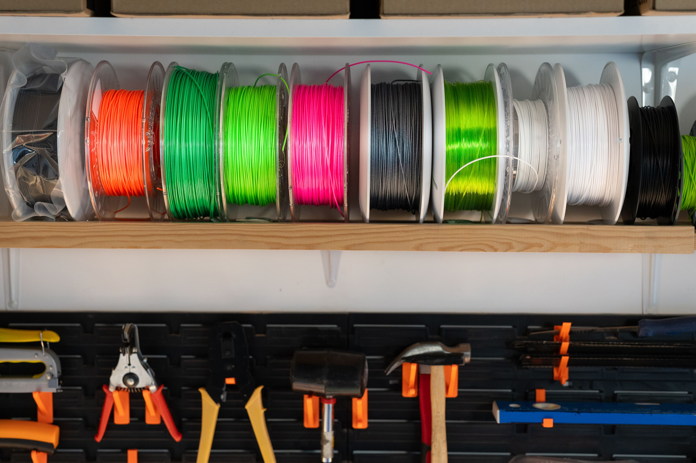
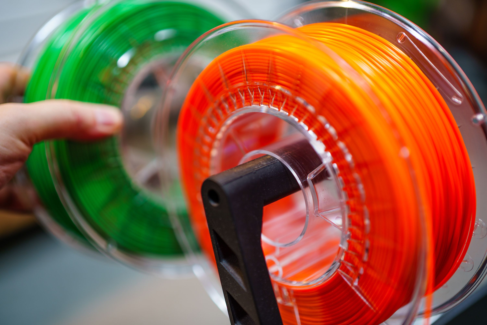
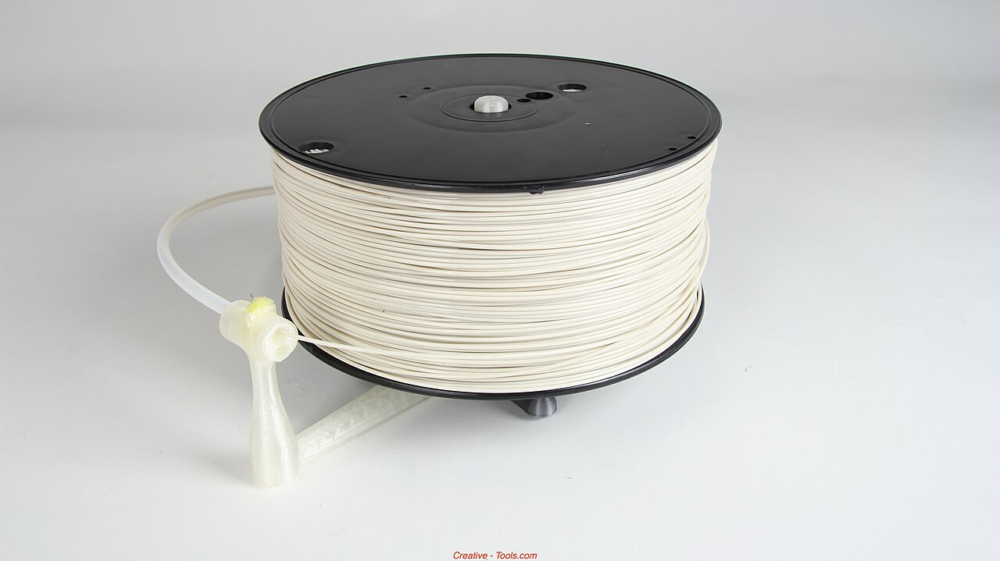
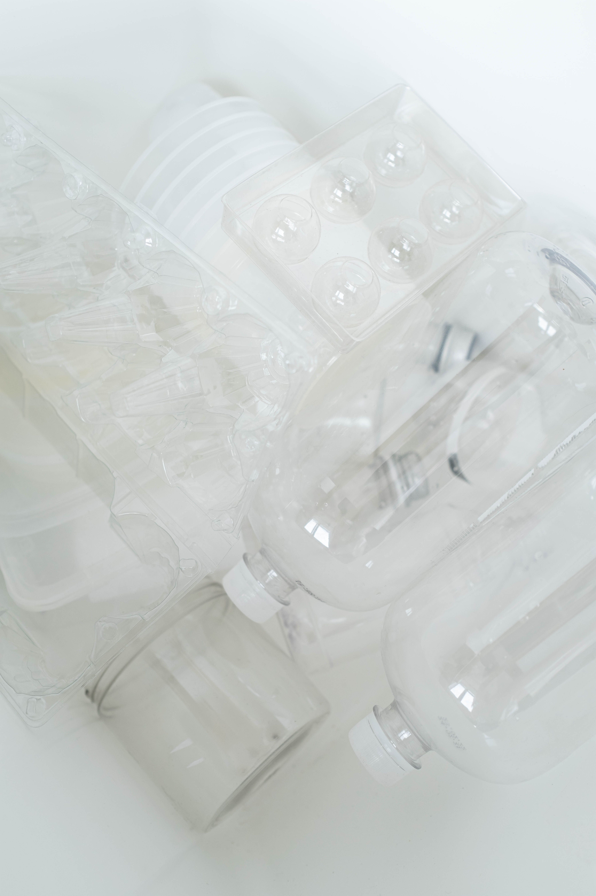

FILAMENTO PRESENTADO EN ROLLOIMPRIME EL CAMBIO
FILAMENTO · PET RECICLADO
Ideas que
vuelven al ciclo.
Filamento ReFil: plástico recuperado que se transforma para dar forma a nuevas ideas con impresión 3D.
La compra se coordina directamente con el proyecto ReFil. Consulta disponibilidad y entrega antes de confirmar tu pedido.
ELIGE EL TONO QUE TE INSPIRA
Una idea, muchos colores.
Fotos reales de bobinas para impresión 3D. Los tonos son referenciales; confirma con ReFil cuáles están disponibles.


Fotos: Jakub Zerdzicki, Jakub Zerdzicki / Pexels; Creative Tools / Wikimedia Commons, CC BY 2.0.
Selección de muestra; no confirma existencias ni disponibilidad de color.
De botella a filamento.
El PET puede tener una segunda vida como material para impresión 3D.

Secuencia visual referencial con fotografías de materiales similares; no son fotografías de producción de ReFil. Botellas: Ron Lach / Pexels.
DEL RESIDUO A LA CREACIÓN
Tu próximo proyecto
puede empezar aquí.
Cada rollo conecta el reciclaje local con nuevas posibilidades de impresión 3D.